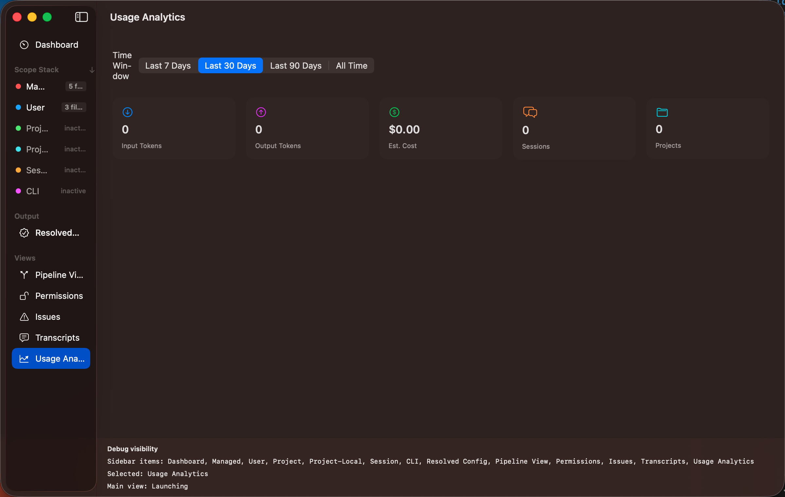

Usage Analytics
The Usage Analytics dashboard gives you insight into how you use Claude Code over time — token
consumption, costs, and which projects and models drive the most usage.

Time Windows
Use the time picker at the top to filter data:
- 7 days — last week of activity
- 30 days — last month
- 90 days — last quarter
- All time — everything on disk
Metrics Cards
Summary cards show headline numbers:
- Total input tokens
- Total output tokens
- Number of sessions
- Number of projects
- Estimated total cost (USD)
Charts
The dashboard includes several visualisations built with Swift Charts:
- Tokens per day — line or bar chart showing daily token consumption
- Top projects — stacked chart of usage by project
- Model distribution — donut chart showing which Claude models you use most
- Top tools — table of most-invoked tools with counts and token usage
Data Source
All analytics are computed locally from your .jsonl transcript files. No data is
sent anywhere — everything stays on your machine.
Tip: If you notice unexpectedly high token usage, check the Top Tools table to see
whether a particular tool (like bash or file reads) is consuming the bulk of your context window.